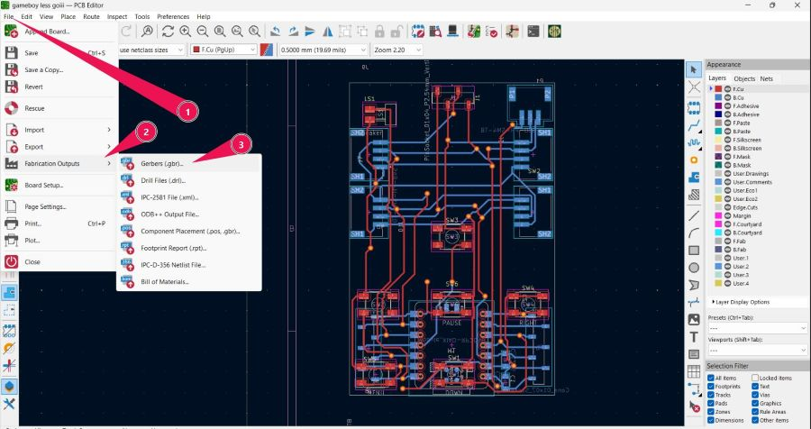
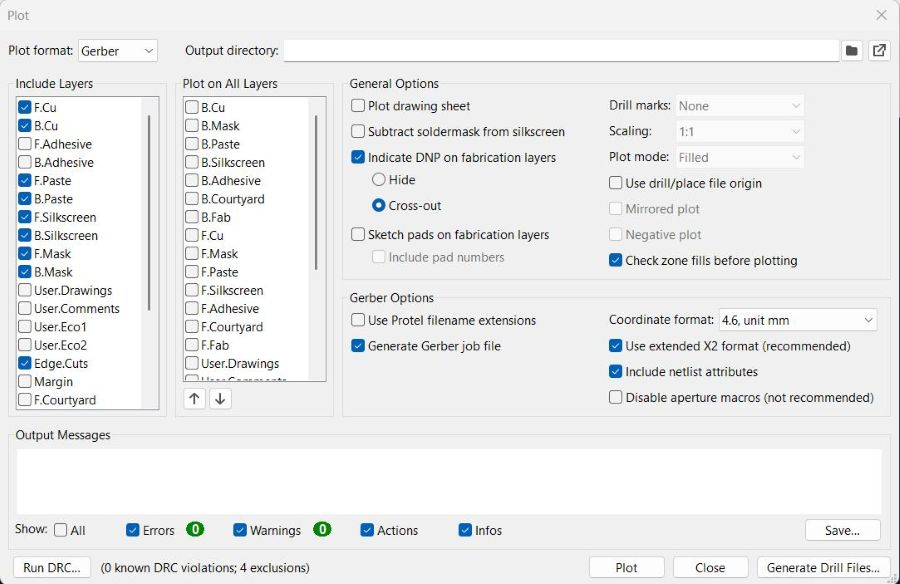
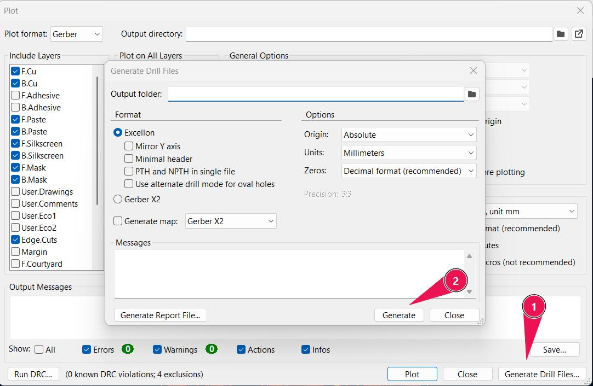
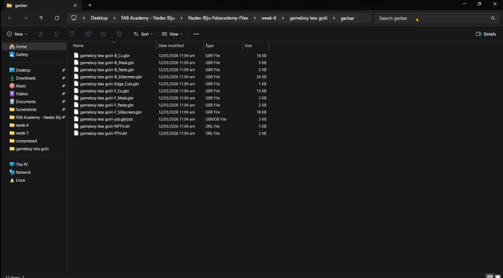
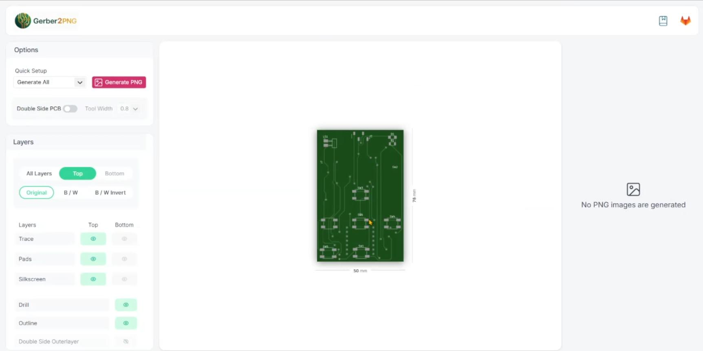
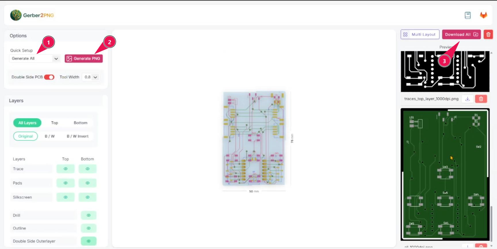

Week 08 – Electronics Production#
Week 8 is where everything from the previous weeks starts to become real. We stop designing PCBs and actually make them — mill the copper, solder the components, program the board, and test that it works. The goal was to take the PCB I designed back in Week 6 and produce a fully functional board out of it.
This week was guided by Saheen, Sibin, and Ravisankar.
Group Assignment#
- Characterise the design rules of our in-house PCB production process
- Submit a PCB design to a professional board house
Individual Assignment#
- Make and test an embedded microcontroller system that you designed
Extra Credit Goals
- Make it with another process (e.g., vinyl cutting, etching)
What I Learned#
This week was a big reality check — going from a KiCad file to a physical, working board taught me a lot about the gap between digital design and physical making.
Key things I picked up:
- How the Gerber2PNG → Mods → Roland MDX-20 milling pipeline works end to end
- Why design rule constraints (trace width, clearance, drill size) actually matter in fabrication, not just on paper
- How V-bit tip geometry translates directly to what you configure in Mods
- Why drill hole diameters and tool diameters need a tolerance margin — exact matches cause the toolpath to disappear
- How to use FabStash to request components from the lab inventory
- SMD soldering workflow — thumb rule of smallest component first, working up in height
- How to use a multimeter for continuity checks and polarity verification before powering anything up
- How to set up a new board (XIAO ESP32-C6) in Arduino IDE from scratch using the manufacturer’s wiki
Software Used#
- KiCad — schematic and PCB design (from Week 6)
- Gerber2PNG (FabLab Kerala) — converting Gerber files to PNG for milling
- Mods Project (offline, lab version) — generating toolpaths (RML) for the CNC mill
- Arduino IDE — programming the XIAO ESP32-C6
Machines Used#
- Roland Modela MDX-20 — PCB milling machine
Weekly Schedule#
| Day | What I Did |
|---|---|
| WED | Lecture on electronics production by Saheen Neil |
| THU | Group assignment — characterising mill design rules , Opened PCB design from Week 6, checked trace widths and clearances |
| FRI | Exported Gerber files, ran Gerber2PNG, set up Mods toolpaths , Milled traces, drilled holes, cut outline on Roland MDX-20 |
| SAT | Created the Arduino sketch that is required for testing the PCB |
| SUN | Created the bill of materials (BOM) for the components needed to populate the PCB, used FabStash to request components from the lab inventory |
| MON | Soldering the PCB, tested the Arduino sketch |
| TUE | Regional review |
Group Assignment – Design Rule Characterisation#
For the group assignment, we used KiCad to design a test board that characterised the minimum feature sizes our lab’s milling process can reliably produce. We tested the V-bit, 1/64" end mill, and 1/32" end mill — each one gives you different trace resolutions and clearance limits.
The key values we established from the group assignment:
| Parameter | Value |
|---|---|
| Minimum Trace Width | 0.4 mm |
| Minimum Clearance | 0.4 mm |
INSERT group-assignment.jpg
These numbers became the constraints I used when checking my own PCB design before fabrication.
Check out the full group documentation here: 🔗 https://fabacademy.org/2026/labs/kochi/group_assignmetns/week08/
Part 1 – Preparing Fabrication Files#
📂 Opening the Week 6 PCB Design#
With the group assignment done and our design rule limits understood, I opened up the PCB I had designed in KiCad during Week 6.
First thing I did was verify that my design was actually within the limits we just characterised:
- Trace width: 0.4 mm ✅ — set this way during Week 6 as instructed
- Clearance: 0.4 mm ✅ — same
Since both values matched the minimum viable specs from the group assignment, the design was good to go for fabrication without any modifications.
📤 Exporting Gerber Files from KiCad#
The first fabrication step is exporting Gerber files — the industry-standard format that encodes every layer of your PCB design.
Layers I exported:#
| Layer | What It Contains |
|---|---|
| F.Cu | Front copper traces |
| B.Cu | Back copper traces |
| Edge.Cuts | Board outline |
| Drill file (.drl) | Hole positions and diameters |
Steps:
Steps to Export Gerber Files:#
- In the PCB Editor, go to File → Fabrication Outputs → Gerbers (.gbr)
- In the Plot dialog:
- Set the Output Directory — I used a
gerber/subfolder in my project - Select the layers you need:
- F.Cu — Front copper (your traces)
- B.Cu — Back copper (if doing a 2-layer board)
- F.Silkscreen — Front silkscreen labels
- F.Mask — Front solder mask
- Edge.Cuts — Board outline
- Set the Output Directory — I used a
- Click Plot to generate the Gerber files


Exporting the Drill File:#
- Still in the Plot dialog, click Generate Drill Files
- In the Drill File dialog:
- Set the same output directory as the Gerbers
- Click Generate Drill File

Creating Zip Files:#
- Navigate to your
gerber/output folder
- Select all the generated files (
.gbr,.drl, etc.) - Right-click and Compress to ZIP
🖼️ Converting Gerbers to PNG Using Gerber2PNG#
The milling pipeline in our lab doesn’t read Gerber files directly — Mods Project requires PNG images. FabLab Kerala built a dedicated tool for this conversion: gerber2png.fablabkerala.in.
There’s also a KiCad plugin version of Gerber2PNG — I installed that as well so I can generate PNGs directly from inside KiCad without going to the browser. The plugin repo is linked in the references at the bottom of this page.
insert gerber2png-kicad-plugin.jpg
Files generated:#
| PNG File | Purpose |
|---|---|
| Front Traces (Top Layer) | Copper trace milling — the V-bit follows these paths |
| Drill Holes (Top Layer) | Hole positions for the drill pass |
| Outline (Top Layer) | Board boundary — the final cutout pass |
| Back Traces | Same as above but for the back copper layer |
| Back Drill Holes | Hole positions from the back side |
| Back Outline | Back boundary cutout |
Steps:
- Go to gerber2png.fablabkerala.in
- Upload the Gerber zip file.
- Click “Generate all PNGs”
- Download the generated PNGs


🗺️ Generating Toolpaths in Mods Project#
With the PNGs ready, the next step was to generate the actual machine instructions — toolpaths — using Mods Project.
Mods is a modular, browser-based toolpath generation environment developed at MIT. It’s the standard tool across Fab Labs for converting image files into RML or G-code that milling machines can execute.
Our lab runs an offline version of Mods locally.
The Mods program for PCB milling loads three core modules:
- Read PNG — imports the trace/drill/outline image
- Set PCB Defaults — defines tool parameters and milling settings
- Mill Raster 2D — generates the raster toolpath from the image
This is a double-sided PCB, so the sequence was:#
Top side:
- Front traces → V-bit pass
- Front drill holes → 1/32" end mill
- Front outline → 1/32" end mill
Flip the board, then:
- Back traces → V-bit pass
- Back drill holes → 1/32" end mill
- Back outline → 1/32" end mill
V-bit settings in Mods:#
| Parameter | Value |
|---|---|
| V-bit Tip Diameter | 0.2 mm |
| V-bit Point Angle | 60° |
| Cut Depth | 0.9 mm |
#
Part 2 – PCB Milling#
⚙️ Machine Setup — Roland Modela MDX-20#
The Roland Modela MDX-20 is the PCB milling machine we use in the lab — a small desktop CNC that’s accurate enough for 0.4 mm trace widths.
Board Fixturing#
The PCB blank (copper-clad FR4) was fixed onto the machine bed using double-sided tape. Since this was a double-sided board, I shared the blank with my classmate Ashitami — she handled the taping and fixturing, and we both used the same board stock.

Setting the Origin#
Before sending any file, the machine origin needs to be set:
- Jog the machine to the desired XY start position on the blank
- Set this as the origin in the Mods interface
- Press Change Tool to move the spindle to the tool change position
- Insert the V-bit and tighten the grub screw with an Allen key
- Jog back to the origin XY position
- Manually lower the Z-axis until the bit just touches the copper surface
- Lock the Z — this is your Z zero reference


🔪 Milling Sequence#
Pass 1 — Front Traces (V-bit)#
Loaded the front traces PNG into Mods, configured the V-bit parameters (tip 0.2 mm, 60°, cut depth 0.9 mm), calculated the toolpath, opened the socket, and clicked Send File.
The machine started milling the copper traces. The V-bit cuts away the copper around the traces — what’s left standing is your circuit.

Pass 2 — Drill Holes (1/32" End Mill)#
Changed the bit to the 1/32" flat end mill. Reset Z zero with the new bit, loaded the drill holes PNG into Mods, calculated, sent file.
Pass 3 — Outline Cut (1/32" End Mill)#
Kept the same 1/32" bit, loaded the outline PNG, calculated and sent. This cuts the board free from the stock material.

Flipping the Board#
After the front side was done, I carefully lifted the board, flipped it, re-aligned it on the bed, and re-taped it down. Then repeated passes 1, 2, and 3 for the back traces, back drill holes, and back outline.
🧹 Post-Milling Cleanup#
After all passes were complete:
- Used a scraper to carefully peel the PCB off the machine bed
- Cleaned the back of the board with IPA (isopropyl alcohol) to remove double-sided tape residue
- Vacuumed the machine bed to clean up copper dust and FR4 chips — leaving it ready for the next person


Part 3 – Component Collection#
📦 Using FabStash#
To get the components needed for assembly, I used FabStash — Fab Lab Kerala’s digital inventory management system. It lets you search the lab inventory, find what’s in stock, and submit a request that the instructors approve.
Steps:
- Log in at inventory.fablabkerala.in using lab credentials
- Search for each component by name or category
- Click + to add it to your request list
- Submit the request
- Wait for instructor approval
- Collect components from their listed storage locations

Most components were available in FabStash, but the button and JST connector weren’t listed in the system — even though they were physically in the lab. I noted these manually on the printed request sheet.
Components Requested#
| Reference | Part | Quantity |
|---|---|---|
| C1, C2 | 100nf | 2 |
| R1 | 1k | 1 |
| D1 | LED_1206 | 1 |
| SW1-6 | Push Button | 6 |
| M1 | Module_XIAO-ESP32C6 | 1 |
| J2, J3, J9, J10 | S4B-PH-SM4-TB | 4 |
| J7, J8 | Conn_01x07_Socket | 2 |
| J1 | PinSocket_01x04_P2.54mm_Vertical_SMD | 1 |
| J5 | Screw_Terminal_01x02_P5mm | 1 |
| P1 | S3B-PH-SM4-TB | 1 |
After the request was approved and printed, I collected everything from the storage locations. All the tiny components were stuck onto a strip of double-sided tape on the printed request sheet — an easy way to keep everything organised and stop 0402s from disappearing.

Part 4 – Soldering#
🔧 Soldering Station Setup#
Before starting, a brief orientation on the soldering workstation:
| Tool | Purpose |
|---|---|
| Soldering Iron | Heating pads and melting solder |
| Hot Air Blower | Reflow soldering / component removal |
| Fume Extractor | Pulling solder fumes away from your face |
| Tip Cleaner | Keeping the iron tip clean for good heat transfer |
| Silicone Work Mat | Heat-resistant surface, keeps small parts from rolling away |
| Tweezers | Placing SMD components accurately |
| Digital Microscope | Inspecting solder joint quality up close |

Safety first: Turned on the fume extractor and wore a mask before starting. Solder fumes are not something you want to breathe in session after session.
🪡 Creating Vias#
Before soldering any components, any required vias were made and soldered first — in my case, I had 32 vias connecting the front and back copper layers. I used a small piece of wire to create the via, soldering it on both sides to ensure a good electrical connection.
📐 Soldering Order — Smallest to Tallest#
The golden rule for PCB assembly: start with the smallest/flattest components and work up to the tallest. This keeps the board stable and makes placement easier.
My order:
- Resistors (1206 SMD — lowest profile)
- Capacitors (1206 SMD)
- XIAO ESP32-C6 (the microcontroller)
- Header pins
- JST connectors
- Terminal blocks / tall connectors
For each SMD component:
- Tin one pad first — add a small blob of solder
- Pick up the component with tweezers, hold it in position
- Touch the iron to the tinned pad — the component sinks into place
- Solder the remaining pads
- Go back and reflow the first joint to clean it up

🔬 Inspection with Digital Microscope#
After each section of components, I used the digital microscope at the station to check solder joint quality — looking for:
- Cold joints (dull, grainy surface — not enough heat or movement during cooling)
- Solder bridges (blobs connecting two adjacent pads — will short your circuit)
- Lifted pads (component slightly off the pad — weak mechanical connection)
- Correct polarity on LEDs and other polarised components
The microscope makes problems obvious that you’d completely miss with the naked eye at these component sizes.

🔌 Continuity Testing with Multimeter#
After soldering the LEDs, I used a multimeter in continuity mode to verify polarity. LEDs are polarised — flip them around and they won’t light up.
The multimeter also helped catch any solder bridges across traces before powering anything up.
Issue I hit: When I checked the XIAO ESP32-C6 after soldering, it wasn’t connecting correctly. Turned out I had placed it in the wrong orientation — rotated 180°. Had to desolder it, clean the pads with solder wick, and resolder it in the correct position. After that, continuity checks all passed.


Part 5 – Programming and Testing#
💻 Setting Up Arduino IDE for XIAO ESP32-C6#
This board used the Seeed Studio XIAO ESP32-C6 — which I hadn’t set up in Arduino IDE before. Different board package from the RP2040 I used in earlier weeks.
- Open Arduino IDE
- Go to File → Preferences
- Add the Seeed board manager URL to Additional Boards Manager URLs
- Go to Tools → Board → Boards Manager, search ESP32, install the Seeed package
- Select XIAO ESP32-C6 as the board
- Select the correct COM port
- Upload
Setup reference: wiki.seeedstudio.com/xiao_esp32c6_getting_started

✅ Test 1 – Basic Blink#
First upload was the classic blink program — just to confirm the board is alive, the IDE can talk to it, and the LED I soldered is actually working.
#define LED_BUILTIN D0
void setup() {
pinMode(LED_BUILTIN, OUTPUT);
}
void loop() {
digitalWrite(LED_BUILTIN, HIGH);
delay(500);
digitalWrite(LED_BUILTIN, LOW);
delay(100);
}After uploading — LED blinked. Board is alive. ✅

💬 Test 2 – Push Button & Serial Monitor#
Button press fires a message to the serial monitor. Simple, but it confirms the button is wired and reading correctly and that UART is working.
#define BUTTON D8
int lastState = HIGH;
void setup() {
pinMode(BUTTON, INPUT_PULLUP);
Serial.begin(9600);
}
void loop() {
int currentState = digitalRead(BUTTON);
if (lastState == HIGH && currentState == LOW) {
Serial.println("Ouch, that hurts!");
}
lastState = currentState;
}🏆 Hero Shot#
All tests passed. The PCB was successfully milled, assembled, and programmed — every button input, LED output, and serial communication working correctly.
Reflection#
This week made me understand how sensitive the gap between digital design and physical fabrication actually is. Even something as small as a drill diameter matching the tool diameter exactly caused a real failure — and fixing it meant actually understanding why it happened, not just randomly tweaking values until it worked.
The other big one was placing the microcontroller in the wrong orientation. That’s the kind of mistake you make exactly once — the desoldering process is painful enough to make sure you always double-check the pin 1 marker before you touch the iron.
What I really appreciate now is how interconnected the whole workflow is. The decisions you make in KiCad (trace width, hole size, component placement) have direct physical consequences on the milling machine and at the soldering station. Getting something wrong anywhere in the chain means going back to a much earlier step.
Also — building programs that I actually wrote during Week 4 and running them on a board I physically made myself this week is genuinely satisfying in a way that’s hard to describe.
Helpful Websites#
- Gerber2PNG (FabLab Kerala) — https://gerber2png.fablabkerala.in/
- Gerber2PNG KiCad Plugin — https://github.com/gsuberland/gerber2png
- Mods Project — https://modsproject.org/
- FabStash Lab Inventory — https://inventory.fablabkerala.in/
- Seeed Studio XIAO ESP32-C6 Setup Guide — https://wiki.seeedstudio.com/xiao_esp32c6_getting_started/